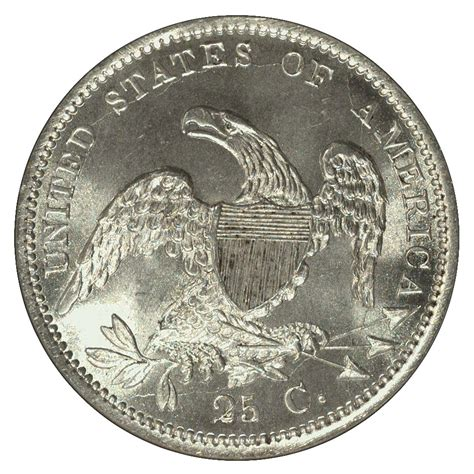
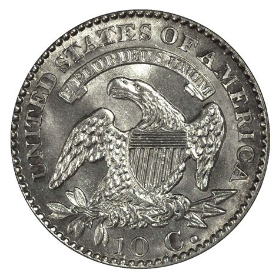

Text set to 16px
Text set to 16pt
Text set to 1em
This is a box styled with pixels
This is a box styled with ems
This is a box styled with percents
This is a paragraph with pixel width. The FitnessGram Pacer test is a multistage aerobic capacity test that progressively gets more difficult as it continues. The 20 meter Pacer test will begin in 30 seconds. Line up at the start. The running speed starts slowly, but gets faster each minute after you hear this signal *boop*. A single lap should be completed each time you hear this sound *ding*. Remember to run in a straight line, and run as long as possible. The second time you fail to complete a lap before the sound, your test is over. The test will begin on the word start. On your mark, get ready, start.
This is a paragraph with percent width. The FitnessGram Pacer test is a multistage aerobic capacity test that progressively gets more difficult as it continues. The 20 meter Pacer test will begin in 30 seconds. Line up at the start. The running speed starts slowly, but gets faster each minute after you hear this signal *boop*. A single lap should be completed each time you hear this sound *ding*. Remember to run in a straight line, and run as long as possible. The second time you fail to complete a lap before the sound, your test is over. The test will begin on the word start. On your mark, get ready, start.
This paragraph has a border on the top only
This paragraph has a border on the bottom only
This paragraph has a border on the right only
This paragraph has a border on the left only
This paragraph has a rainbow border.
 